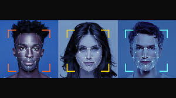
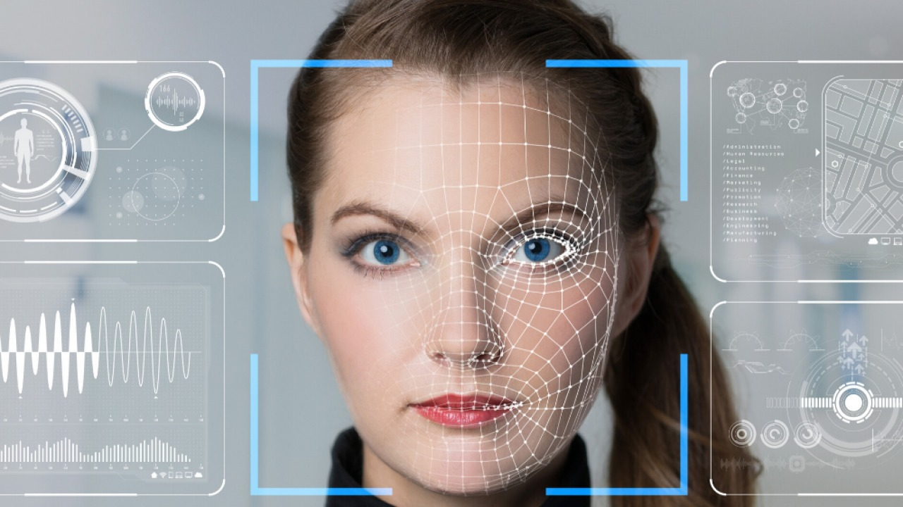

Rancangan Bangun Absensi Dengan Scan Wajah Berbasis Mobile
Face recognition atau pengenalan wajah adalah teknik biometrik yang digunakan untuk mengidentifikasi individu dari gambar digital atau rekaman video. Teknologi ini mengandalkan algoritma komputer untuk mendeteksi dan mengidentifikasi wajah
seseorang.
Adapun cara kerja yang ada pada device dengan sistem face recognition (SCAN WAJAH) yaitu;
1. Proses Pendeteksian Wajah
Proses yang pertama ini dilakukan dengan mengambil foto wajah dengan memindai foto 2D secara digital maupun video untuk mengambil foto wajah 3D. Kamera mendeteksi dan menempatkan citra wajah, baik sendirian
atau di tengah keramaian. Gambar mungkin menunjukkan orang tersebut melihat lurus ke depan.
2. Analisis Wajah
Setelah wajah dideteksi, software bisa menentukan posisi, ukuran, karateristik, dan sikap kepala. Selanjutnya, gambar wajah ditangkap dan dianalisis. Sebagian besar teknologi pengenalan wajah bergantung pada gambar
2D daripada gambar 3D karena dapat lebih mudah mencocokkan gambar 2D dengan foto publik atau yang ada di database.
Geometri wajah Anda kemudian dibaca. Faktor utama termasuk jarak antara mata Anda, kedalaman rongga mata Anda, jarak dari dahi ke dagu, bentuk tulang pipi Anda, dan kontur bibir, telinga, dan dagu. Tujuannya adalah untuk mengidentifikasi wajah yang merupakan
kunci untuk membedakan wajah Anda.
3. Mengubah Gambar menjadi Data
Proses selanjutnya yaitu mengambil wajah mengubah informasi analog (wajah) menjadi sekumpulan informasi digital (data) berdasarkan fitur wajah seseorang. Analisis wajah Anda pada dasarnya diubah menjadi
rumus atau kode numerik yang disebut faceprint. Dengan cara yang sama bahwa sidik jari (fingerprint) itu unik, setiap orang memiliki sidik wajah (faceprint) sendiri.
4. Menemukan Kecocokan
Sidik wajah Anda kemudian dibandingkan dengan database wajah lain yang dikenal. Jika wajah Anda cocok dengan gambar dalam database pengenalan wajah, maka penentuan akan dibuat. Setelah itu, sistem melakukan
verifikasi dan identifikasi. Terakhir adalah melakukan analisis tekstur wajah untuk meningkatkan keakuratan hasil pencocokkan.


Manfaat dari aplikasi face recognition (SCAN WAJAH) 1.memungkinkan verifikasi identitas pengguna dengan tingkat keamanan yang tinggi, membantu melindungi informasi dan sistem dari akses yang tidak sah.
2. mempermudah akses ke informasi dan sistem yang dibutuhkan, sehingga memudahkan pengguna dalam menjalankan tugas sehari-hari.
3. dapat dengan mudah diintegrasikan pada absensi kehadiran menggunakan scan wajah pada mahasiswa.